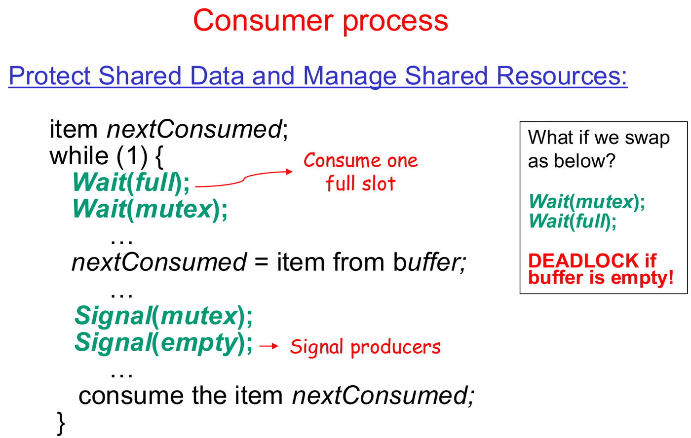

This was written entirely with AI.
How to Use This Guide
Read the parts in order. Each section answers one question and adds one new idea. When a section needs a fact from an earlier section, it tells you the fact again. At the end of each part, a short list tells you what you know now.
Part 0: Before You Start
1. What You Do in This Lab
In this lab, two or more programs use the same data at the same time. You stop them from damaging the data. You also make one program stop and wait until another program tells it to continue.
You do four tasks:
- You read the spinlock. This is a lock that the xv6 kernel already has.
- You read the kernel functions
sleep()andwakeup(). They let a program wait without using the CPU. - You complete a semaphore in the kernel. A semaphore is a counter that programs use to take turns.
- You use the semaphore in two test programs: a shared counter and a shared buffer.
2. Words You Need
This table gives the basic words. You do not need to remember it now. The guide explains each word again where it first uses it.
| Word | What it means in this lab |
|---|---|
| xv6 | A small teaching operating system. It is similar to Unix. You change its source code in this lab. |
| QEMU | A program on your Linux computer that copies the behaviour of a RISC-V computer. xv6 runs inside QEMU. |
| CPU | The part of the computer that runs instructions. With
CPUS=3, QEMU gives xv6 three CPUs. Three programs can then
run at the same moment. |
| Kernel | The part of xv6 that controls the computer. It runs in kernel mode, which can access all memory. |
| User program | A normal program, for example race_test. It runs in
user mode, which cannot access kernel memory. |
| Process | One user program while it runs. Each process has a number, the PID. |
| System call | A request from a user program to the kernel. The program stops, the kernel does the work, and then the program continues. |
| Shared data | Data that two or more processes can read and change. |
| Critical section | The lines of code that read or change shared data. Only one process at a time must run these lines. |
| Race condition | An error that occurs when two processes run a critical section at the same time. The result then depends on which process runs first. |
3. Process States in xv6
The kernel keeps a record for each process. One field in this record is the state. The state tells what the process does now.
| xv6 state | Lecture name | Meaning |
|---|---|---|
RUNNING |
Running | The process runs on a CPU now. |
RUNNABLE |
Ready | The process can run. It waits for a free CPU. |
SLEEPING |
Waiting | The process cannot run. It waits for an event. |

In xv6, “waiting” is SLEEPING and “ready” is
RUNNABLE.
The scheduler is the kernel code that selects the
next RUNNABLE process. It then makes that process
RUNNING. You studied the scheduler in Lab 2.
4. Files in This Lab
| Part | File | What is in the file |
|---|---|---|
| 1 | kernel/spinlock.h, kernel/spinlock.c |
The spinlock: acquire(), release(),
push_off(), pop_off() |
| 1 | kernel/proc.c |
Kernel sleep(), wakeup(),
sched(), yield() |
| 2 | kernel/semaphore.c |
The semaphore code. You complete three functions here. |
| 2 | kernel/sysproc.c |
The system calls for the semaphore. They are already done. |
| 2 | kernel/main.c |
Boot code. It calls seminit(), ucnt_init()
and ubuf_init(). |
| 3 | kernel/ucnt.c |
The shared counter |
| 4 | kernel/ubuf.c |
The shared buffer |
| 2–4 | user/race_test.c |
The test program. It has three tests. |
5. How to Start
- Use the
lab3branch. Start xv6 withmake CPUS=3 qemu. - Use three CPUs. Then two processes can run at the same moment, and errors with shared data occur more often. (In Lab 2 you used one CPU. One CPU made the scheduling result easy to predict.)
- The program
race_testruns three tests in this sequence:sem_basic(),race_test(),producer_consumer(). To run one test only, put the other two calls and the line that printsALL TESTS PASSEDin comments. Do not removeexit(0). - If a test stops and does not continue, press
Ctrl-a, release the keys, then pressx. This stops QEMU. Start QEMU again before you try again. A stopped test can leave semaphores and child processes behind.
6. How the Lab Is Checked
The lab has a checkpoint at the end of each part. At a checkpoint, a TA asks you to show the test result and to explain the code. You do not submit logs or AI chats.
The manual gives prompts for the course Gemini Notebook. The notebook contains the Lab 3 source code and the xv6 book. The manual tells you to use it in five steps:
- Say what result you expect.
- Ask the notebook a short question. Ask for file names, function names and line numbers.
- Open those lines in the source code. Correct any claim from the
notebook that does not agree with the
lab3branch. - Build xv6 and run the test.
- Explain the result with the code.
Do not ask the notebook to check your own code. If your code fails, give the notebook the exact error or output. Use its answer as a list of things to check.
7. Why the Shared Data Is in the Kernel
The function fork() makes a new process, the
child. The child gets a copy of the
memory of the first process, the parent.
Think about a counter that is a normal variable in
race_test.c. After fork(), the parent has one
copy and the child has a different copy. Each process adds to its own
copy. The two processes do not share the counter.
For this reason, the lab puts the counter, the buffer and the
semaphores in kernel memory. fork() does
not copy kernel memory. So there is only one counter, one buffer and one
table of semaphores. Each process uses them through system calls.
A semaphore has a number, the semaphore ID
(semid). This number is the position of the semaphore in
the kernel table. fork() copies the number into the child.
In the child, the number still points to the same semaphore in the
kernel.
Parent memory Child memory (a copy)
┌──────────────────┐ ┌──────────────────┐
│ int semid = 3 │ │ int semid = 3 │ <- fork() copies the number
└────────┬─────────┘ └────────┬─────────┘
│ sem_wait(3) │ sem_wait(3)
▼ (system call) ▼ (system call)
══════════════ kernel memory (fork() does not copy it) ═══════
semaphores[3] <- both processes use this one semaphore
ucnt[0] <- one counter
ubuf <- one bufferPart 1: Spinlocks, Sleep and Wakeup
1. The Problem:
counter++ Is Three Steps
Lecture 4 uses counter++ as an example. This line looks
like one step. But the CPU does it in three steps:
1. Read: copy counter from memory into a CPU register.
2. Add: add 1 to the register.
3. Write: copy the register back into counter in memory.A register is a small storage place inside the CPU. Each CPU has its own registers.
Two processes A and B can do these steps at the same time. At the
start, counter is 5:
| Time | Process A | Process B | counter in memory |
|---|---|---|---|
| 1 | reads 5 | 5 | |
| 2 | reads 5 | 5 | |
| 3 | adds 1, writes 6 | 6 | |
| 4 | adds 1, writes 6 | 6 |
Both processes added 1. But counter went from 5 to 6,
not to 7. B wrote over the result of A. This is a race
condition. The three steps together are a critical
section: only one process at a time must run them.
2. What a Correct Solution Must Do
A process puts code before and after the critical section:
- Entry section: the process asks for permission before the critical section.
- Exit section: the process gives back the permission after the critical section.
Lecture 4 (slides 4.12–4.13) gives three rules for a correct solution:
- Mutual exclusion: only one process is in the critical section at a time.
- Progress: if the critical section is free and a process wants to go in, the process must not wait forever.
- Bounded waiting: other processes can go in first only a limited number of times.
3. A Lock, and the Simplest Lock That Fails
A lock is a variable that shows if the critical section is in use: 0 means free, 1 means in use. A process acquires (takes) the lock before the critical section. It releases (gives back) the lock after the critical section.
The first idea for “take the lock” is two separate steps:
while(lk->locked != 0) ; // check: wait until the lock is free
lk->locked = 1; // set: take the lockThis code fails. At the start, locked is 0. CPU 0 and
CPU 1 both run the code:
| Time | CPU 0 | CPU 1 | locked |
|---|---|---|---|
| 1 | reads locked: it is 0. Stops waiting. |
0 | |
| 2 | reads locked: it is 0. Stops waiting. |
0 | |
| 3 | writes locked = 1 |
1 | |
| 4 | writes locked = 1 |
1 | |
| 5 | goes into the critical section | goes into the critical section | 1 |
Both CPUs read 0 before either CPU wrote 1. Mutual exclusion fails.
Remember the cause. There is a gap between the check (time 1) and the set (time 3). The other CPU runs inside that gap. You will see the same type of gap again in section 10.
4. The Fix: One Instruction That Checks and Sets
RISC-V has an instruction, amoswap, that closes the gap.
It does two things as one step:
- It reads the old value of
locked. - It writes 1 into
locked.
“One step” means that no other CPU can read or write
locked between part 1 and part 2. The word for this is
atomic.
The instruction gives back the old value:
- If the old value is 0, the lock was free. This CPU now has the lock.
- If the old value is 1, another CPU has the lock. Writing 1 over 1 changes nothing. The CPU tries again.
In C, xv6 writes this instruction as
__sync_lock_test_and_set(&lk->locked, 1). Lecture 4
(slides 4.24–4.25) calls it TestAndSet. Lecture 4 also
shows the same gap for a semaphore that waits in a loop (slide
4.31).
The xv6 spinlock is in kernel/spinlock.h:
struct spinlock {
uint locked; // 0 = free, 1 = in use
char *name; // name of the lock, for error messages
struct cpu *cpu; // the CPU that has the lock
};The function acquire() in kernel/spinlock.c
takes the lock:
void acquire(struct spinlock *lk) {
push_off(); // Step 1: stop interrupts on this CPU (section 5)
if(holding(lk))
panic("acquire"); // Step 2: this CPU has the lock already: error
while(__sync_lock_test_and_set(&lk->locked, 1) != 0)
; // Step 3: check and set in one step; try again if in use
__sync_synchronize(); // Step 4: memory fence (section 6)
lk->cpu = mycpu(); // record which CPU has the lock
}panic() prints a message and stops the whole kernel. The
kernel calls it when it finds an error that it cannot repair.
The function release() does the opposite steps. It sets
locked back to 0 and then calls pop_off().
A CPU that waits for the lock runs the loop in step 3 again and again. This is spinning, and it gives the spinlock its name. While a CPU spins, it does no useful work.
5. A Second Danger: An Interrupt on the Same CPU
An interrupt is a signal from a device, for example the timer. When an interrupt comes, the CPU stops the code that it runs. It runs an interrupt handler, which is a short kernel function. After the handler, the CPU continues the code that it stopped.
Without step 1 of acquire(), this error can occur:
- Kernel code on CPU 0 has lock
L. - A timer interrupt comes on CPU 0. The interrupt handler also wants
lock
L. - The handler spins and waits for
L. - The code that has
Lcannot continue, because the handler does not end.Lnever becomes free. CPU 0 stops forever.
push_off() stops interrupts on this CPU
only. So no handler can start on CPU 0 while CPU 0 has a
lock.
Stopping interrupts does not stop another CPU. Each
CPU has its own interrupt setting. When CPU 0 stops its interrupts, CPU
1 continues to run. CPU 1 can still read and write the same memory. Only
the amoswap instruction controls what two CPUs do
together.
What acquire() does |
What it prevents | What it does not prevent |
|---|---|---|
Stops interrupts on this CPU (push_off) |
An interrupt handler on this CPU waits for a lock that this CPU has | Another CPU runs at the same time |
Reads and writes locked in one step
(amoswap) |
Two CPUs both take the lock | — |
On a computer with one CPU, stopping interrupts is
enough. With no interrupt, the kernel cannot change to a different
process, so no other code can run. This is why the lecture slide for
TestAndSet says “interrupt is disabled”. On a computer with
many CPUs, xv6 needs both protections.
push_off() and pop_off() count. Each
acquire() adds 1 to a counter on the CPU,
noff. Each release() subtracts 1. Interrupts
start again only when noff is 0. If a CPU has two locks,
interrupts start again only after it releases both locks.
6. The Memory Fence
A modern CPU and a compiler can change the sequence of memory reads
and writes to make the program faster. __sync_synchronize()
puts a fence instruction in the code. Reads and writes
cannot move across the fence. So all the reads and writes of the
critical section stay between acquire() and
release(). Without the fence, another CPU could see the
lock as free before it sees the new data.
7. When Spinning Wastes the CPU
A spinlock is good for a short wait, for example 10 instructions. Some waits are long.
Here is an example of a long wait. Process A wants to take one item
from a shared count, value. But value is 0. A
must wait until a different process B adds 1. B can take a long time. B
is possibly not running yet.
If A spins, A uses a full CPU for the full wait, and does no work. The next sections show a better method: A sleeps.
8. Sleep: Give the CPU Away While You Wait
Think about a restaurant. You order food, but the food is not ready. You can stand at the counter and ask “Is it ready?” again and again. That is spinning. Or you can take a buzzer, sit down, and do something else. When the food is ready, the kitchen presses your buzzer. That is sleeping.
In xv6, A does the same:
- A sees that
valueis 0. - A calls the kernel function
sleep(). The kernel changes A fromRUNNINGtoSLEEPING. Then the kernel gives the CPU to a different process. - Later, B adds 1 to
value. - B calls the kernel function
wakeup(). The kernel changes A fromSLEEPINGtoRUNNABLE. - Later, the scheduler selects A, and A runs again.
While A is SLEEPING, A uses no CPU time.
Do not mix up the two sleep functions.
xv6 has a different sleep for user programs:
User sleep(ticks) |
Kernel sleep(chan, lk) |
|
|---|---|---|
| Who calls it | A user program (it is a system call) | Kernel code only |
| What it waits for | A number of timer ticks | An event: a value in kernel memory changes |
| What ends the wait | The time passes | A different process calls wakeup(chan) |
This guide always means the kernel sleep().
9. How
wakeup() Finds the Correct Process: the Channel
Many processes can sleep at the same time. Each one waits for a
different event. wakeup() must wake only the processes that
wait for this event.
In the restaurant, each buzzer has a number. The kitchen presses only
your number. In xv6, the number is the channel,
chan:
sleep(chan)writes the channel into the record of the process:p->chan = chan.wakeup(chan)looks at every process. It wakes each process that isSLEEPINGand has the samechan.
chan is only a label. It is a memory address, but the
kernel never reads or writes the memory at that address. It only
compares the addresses. Usually the label is the address of the object
that the process waits for. Two different objects have two different
addresses, so they have two different labels.
Here is a first, simple version of the two functions. It has no locks:
// First version. It has a bug (section 10).
void sleep(void *chan) {
struct proc *p = myproc(); // the process that calls sleep()
p->chan = chan; // write the label
p->state = SLEEPING; // RUNNING -> SLEEPING
sched(); // give the CPU to the scheduler; the process stops here
p->chan = 0; // the process continues here after a wakeup
}
void wakeup(void *chan) {
for(each process p)
if(p->state == SLEEPING && p->chan == chan)
p->state = RUNNABLE; // SLEEPING -> RUNNABLE, not RUNNING
}sched() saves the registers of the process and starts
the scheduler. You studied it in Lab 2.
A and B use the two functions like this:
// Process A (waits) // Process B (gives)
while(value == 0) value = 1;
sleep(&value); wakeup(&value);
value--;10. The Bug: A Wakeup That Comes Too Early
A and B run at the same time, on two CPUs. At the start,
value is 0:
| Time | Process A | Process B |
|---|---|---|
| 1 | checks value: it is 0. Decides to sleep. |
|
| 2 | sets value = 1 |
|
| 3 | calls wakeup(&value). A is not
SLEEPING yet. So wakeup() changes
nothing. |
|
| 4 | sets state = SLEEPING. Calls sched(). |
|
| 5 | sleeps forever. But value is 1. |
B sent the wakeup at time 3. Nobody received it. The name for this is a lost wakeup.
In the restaurant, the kitchen presses your buzzer while you walk to your seat, before you switch the buzzer on. You then wait forever for food that is already on the counter.
Find the cause. It is the same type of gap as in
section 3. There is a gap between A’s check (time 1) and A’s change to
SLEEPING (time 4). B ran inside the gap.
The goal: B must not be able to change
value and call wakeup() while A is inside the
gap.
11. Close the Gap, Step 1: A Lock for the Value
Add a spinlock, lk, that protects value.
The rule: every process holds lk while it reads or changes
value.
// Process A (waits) // Process B (gives)
acquire(&lk); acquire(&lk);
while(value == 0) value = 1;
sleep(&value, &lk); wakeup(&value);
value--; release(&lk);
release(&lk);Now A holds lk when it checks value. B
cannot change value until A releases lk.
A new problem. A cannot keep lk while
it sleeps. B needs lk to change value and to
call wakeup(). If A sleeps with lk, B spins
forever on lk. Then B never wakes A, and A sleeps forever.
(Also, xv6 does not let a process keep lk when it gives up
the CPU. Section 15 explains this.)
So sleep() must release lk. This is why
lk is an argument of sleep(). But
when can sleep() release it?
- If
sleep()releaseslkbefore A isSLEEPING, the gap opens again. B can run in it. - A cannot release
lkafter it stops running.
So, from the view of wakeup(), “release lk”
and “become SLEEPING” must be one step. xv6 does this with
a second lock.
12. Close the Gap, Step 2: Pass From One Lock to the Other
Each process has its own spinlock, p->lock. It
protects the state and chan of that process.
wakeup() takes the p->lock of each process
before it reads that process’s state. So while A holds A’s
p->lock, wakeup() cannot look at A.
sleep() uses the two locks like a relay race, where one
runner hands the baton to the next:
- A takes
p->lockfirst. - Then A releases
lk.
So A always holds at least one of the two locks:
- While A holds
lk, B cannot changevalue. - While A holds
p->lock, B’swakeup()cannot look at A.
Here is the same example again, with the two locks:
| Time | Process A | Process B |
|---|---|---|
| 1 | holds lk. Checks value: it is 0. Calls
sleep(). |
|
| 2 | takes p->lock |
|
| 3 | releases lk |
|
| 4 | takes lk. Sets value = 1. Calls
wakeup(). |
|
| 5 | wakeup() tries to take A’s p->lock. A
holds it. B spins. |
|
| 6 | sets chan, sets state = SLEEPING, calls
sched() |
|
| 7 | the CPU leaves A. The scheduler releases A’s
p->lock. |
|
| 8 | wakeup() takes A’s p->lock. Finds A
SLEEPING with the same chan. Sets A to
RUNNABLE. |
B’s wakeup now arrives after A is SLEEPING. A receives
it.
At time 7, A cannot release its own p->lock, because
A stopped at sched(). The scheduler code releases it, after
the CPU has fully left A.
There are only two possible cases for B:
- B takes
lkbefore A’s check. Then A seesvalue == 1and does not sleep. - B takes
lkafter A releases it. Thenwakeup()must wait for A’sp->lock, and A holds that lock until A isSLEEPING. Sowakeup()finds A.
The real code
Now read the real code in kernel/proc.c. Each line has a
letter:
void sleep(void *chan, struct spinlock *lk) {
struct proc *p = myproc(); // the process that calls sleep()
acquire(&p->lock); // (a) take the process lock first
release(lk); // (b) then release the condition lock
p->chan = chan; // (c) write the label
p->state = SLEEPING; // RUNNING -> SLEEPING
sched(); // (d) give the CPU to the scheduler; the process stops here
// The process continues here after a wakeup, when the scheduler selects it again.
p->chan = 0; // (e) clear the label
release(&p->lock);
acquire(lk); // (f) take the condition lock again before it returns
}
void wakeup(void *chan) {
struct proc *p;
for(p = proc; p < &proc[NPROC]; p++) { // look at every process
if(p != myproc()) { // skip the process that calls wakeup()
acquire(&p->lock);
if(p->state == SLEEPING && p->chan == chan)
p->state = RUNNABLE; // SLEEPING -> RUNNABLE, not RUNNING
release(&p->lock);
}
}
}The xv6 name for lk is the condition
lock, because it protects the condition that the process checks
(here, value == 0).
- Lines (a) and (b) are the relay: first take
p->lock, then releaselk. - Line (d): the scheduler releases
p->lockafter it switches away from A. - Line (e): when the scheduler selects A again, the scheduler takes
A’s
p->lockfirst. So A continues here withp->lock, and A releases it. - Line (f): A takes
lkagain. The caller’swhileloop checksvalueagain aftersleep()returns. It must holdlkfor that check.
13. Why A Checks
Again After It Wakes: while, Not if
wakeup() changes the state from SLEEPING to
RUNNABLE. That is all it does:
- It does not run the process now. The scheduler runs the process later.
- It wakes all processes that sleep on that
chan, not only one. - It does not keep the resource for the process that it wakes.
So, when A runs again, a different process can already have taken the
value. For this reason, code that calls sleep() always uses
a while loop, not an if:
acquire(lk);
while(the value is not correct) // use WHILE, not IF
sleep(chan, lk);
// Here: the value is correct, and this process has lk.
...
release(lk);Part 2 shows an example with two sleeping processes.
14. The Full Path of States
| Event | Function | State change |
|---|---|---|
| The value is not correct. The process waits. | sleep() |
RUNNING → SLEEPING |
| A different process changes the value | wakeup() |
SLEEPING → RUNNABLE |
| The scheduler selects the process | scheduler() |
RUNNABLE → RUNNING |
A process that leaves SLEEPING always goes to
RUNNABLE (ready). It never goes directly to
RUNNING.
15. A Process Must Not Keep a Spinlock When It Gives Up the CPU
sched() does this check:
if(mycpu()->noff != 1)
panic("sched locks");noff is the number of spinlocks that this CPU holds
(section 5). When a process gives up the CPU, it must hold
exactly one spinlock: its own p->lock.
Think about what occurs if it holds a different spinlock too:
- Interrupts stay off on that CPU.
- Any other process that needs that spinlock spins until the sleeping process runs again. That can take a very long time.
This is why sleep() releases lk before it
calls sched().
It is also the main difference between a spinlock and a semaphore. A process can keep a semaphore while it sleeps or gives up the CPU. A process cannot keep a spinlock at that time. Part 4 uses this fact.
16. Spin or Sleep: Which Costs Less? (Manual §1.3)
The manual asks which is cheaper: to spin or to sleep. There is no single correct number. You must give your assumptions.
What sleeping costs. The process takes
p->lock, changes its state and switches to the
scheduler. The scheduler selects a different process. Later,
wakeup() looks at every process in the table. The scheduler
selects the process again and switches back. This is at least two
context switches. (A context switch saves the registers
of one process and loads the registers of another.) Assume that all this
costs a few thousand CPU cycles.
What spinning costs. One CPU does no useful work for the full wait.
| Wait time | Better choice | Reason |
|---|---|---|
| About 10 cycles | Spin | The wait ends before one sleep and wakeup could finish. Sleeping costs more than it saves. |
| About 10,000 cycles | Sleep | Spinning uses 10,000 cycles of a CPU. That is more than the cost of a sleep and a wakeup. A different process can use the CPU instead. |
Give these assumptions:
- Spinning helps only if the process that has the lock runs on a different CPU. On one CPU, that process cannot run while you spin. Then you waste all the spin cycles.
- The cost of a context switch is an assumption. It is not a measured xv6 value.
- Lecture 4 (slide 4.30) says the same thing. A lock that waits in a loop has no context switch cost. But it wastes CPU time if the critical section is long.
What You Know Now (Part 1)
counter++is three steps. Two processes can mix the steps and lose an update.- A lock with a separate check and set fails, because the other CPU
runs in the gap between them.
amoswapchecks and sets in one step. acquire()also stops interrupts on its own CPU. This does not stop other CPUs.- For a long wait, a process sleeps. It writes a label
(
chan) and becomesSLEEPING.wakeup(chan)makes itRUNNABLE. - A wakeup that comes between the check and the sleep never reaches
the waiting process.
sleep()prevents this: it takesp->lockbefore it releaseslk. - After a wakeup, the process checks again in a
whileloop.
Part 2: The Semaphore
1. What a Semaphore Is
Think about the sign at a car park that shows the number of free spaces. A car waits at the gate if the number is 0. When a car goes in, the number goes down by 1. When a car leaves, the number goes up by 1, and a waiting car can go in.
Lecture 4 (slide 4.28) gives the same idea. A
semaphore is an integer S. Processes
change it only with two operations:
Wait(S): ifSis more than 0, subtract 1 fromS. IfSis 0, wait.Signal(S): add 1 toS. If a process waits, let it continue.
Each operation is one step (atomic).
There are two types:
- A binary semaphore has the value 0 or 1. It lets one process at a time into a critical section. Another name for it is mutex (from “mutual exclusion”).
- A counting semaphore can have any value from 0 up. It counts how many items of a resource are free, for example empty places in a buffer.
2. The Semaphore Uses the Pattern From Part 1
In Part 1, process A waited until value was more than 0,
and then took one. Process B added 1 and woke A. A semaphore does
exactly this:
| Part 1 | xv6 semaphore |
|---|---|
A’s code: wait while value == 0, then
value-- |
sem_wait() |
B’s code: value = 1, then wakeup() |
sem_signal() |
value |
sem->value |
The condition lock lk |
sem->lock |
The label chan |
sem (the address of the semaphore) |
So, if you understand Part 1, you already understand most of the semaphore code.
3. The xv6 Semaphore
Table (kernel/semaphore.c)
#define MAX_SEMAPHORES 32
struct semaphore {
struct spinlock lock; // protects value
int value; // the count; it is never less than 0
int in_use; // 1 if a program has this semaphore, 0 if it is free
};
struct semaphore semaphores[MAX_SEMAPHORES]; // the table: 32 semaphores
struct spinlock sem_table_lock; // protects in_useThe file has two types of lock. They protect different data:
sem_table_lockprotects thein_usefields. Onlysem_alloc()andsem_free()use it.- Each semaphore has its own
lock. It protects thevalueof that semaphore.sem_wait(),sem_signal()andsem_getvalue()use it.
4. Three Functions With Similar Names
| Function | Where it is | When it runs | What it does |
|---|---|---|---|
seminit() |
kernel/semaphore.c. kernel/main.c calls
it. |
One time, when xv6 starts | Prepares the full table. Marks all 32 semaphores as free. Prepares each spinlock. |
sem_init(value) |
user/user.h |
When a user program wants a semaphore | It is a system call. The kernel function sys_sem_init()
receives it. |
sem_alloc(value) |
kernel/semaphore.c |
sys_sem_init() calls it |
Takes sem_table_lock. Finds the first free semaphore.
Sets in_use = 1 and sets value. Gives back the
position in the table. Gives back -1 if all 32 are in use. |
5. How a Call Gets to the Kernel
You did this in Lab 1. The path for sem_init(1) is:
User program calls sem_init(1)
│ user/usys.pl makes a short function for each system call:
│ li a7, SYS_sem_init put the system call number in register a7
│ ecall go into the kernel
▼
Kernel: usertrap() → syscall() reads a7 and finds the correct function
▼
kernel/sysproc.c: sys_sem_init() reads the argument with argint()
▼
kernel/semaphore.c: sem_alloc(value) the result goes back to the user programThe functions in sysproc.c only read the arguments and
call the kernel function. All the semaphore logic is in
semaphore.c.
6. The Code You Complete
Each function first checks the semaphore ID. Then it does the Part 1 pattern.
int sem_wait(int semid) {
if(semid < 0 || semid >= MAX_SEMAPHORES || !semaphores[semid].in_use)
return -1; // incorrect ID: error
struct semaphore *sem = &semaphores[semid];
acquire(&sem->lock);
while(sem->value == 0) // check again after each wakeup
sleep(sem, &sem->lock); // label = sem; condition lock = sem->lock
sem->value--; // here value > 0, and we have the lock
release(&sem->lock);
return 0;
}
int sem_signal(int semid) {
if(semid < 0 || semid >= MAX_SEMAPHORES || !semaphores[semid].in_use)
return -1;
struct semaphore *sem = &semaphores[semid];
acquire(&sem->lock);
sem->value++;
wakeup(sem); // the same label as in sem_wait()
release(&sem->lock);
return 0;
}
int sem_getvalue(int semid) {
if(semid < 0 || semid >= MAX_SEMAPHORES || !semaphores[semid].in_use)
return -1;
struct semaphore *sem = &semaphores[semid];
int v;
acquire(&sem->lock);
v = sem->value;
release(&sem->lock);
return v;
}Which lock and which label
- Condition lock:
sem->lock, the spinlock of this one semaphore. Do not usesem_table_lock. That lock is for thein_usefields, not forvalue. - Label (
chan):sem, the address of the semaphore.sem_wait()sleeps with this label.sem_signal()wakes this label. Each semaphore has a different address. So a signal on semaphore 3 does not wake a process that waits on semaphore 5. sem_signal()changesvalueand callswakeup()while it holdssem->lock. This is B’s side of the rule in Part 1, section 11.
Why
sem_getvalue() also takes the lock
Another CPU can change value at the same time. With the
lock, you read a value that was correct at one moment. Without the lock,
you can read a value from the middle of a change.
7. An Example: Why
sem_wait() Uses while
A semaphore has value = 0. Processes A and B sleep on
it.
- Process P calls
sem_signal(). Nowvalue = 1.wakeup(sem)makes both A and BRUNNABLE. - A runs first. It takes
sem->lock. It seesvalue == 1. It subtracts 1, sovalueis 0. A continues. - B runs. It takes
sem->lock.- With
if: B does not check again. It subtracts 1, sovalueis -1. B goes into the critical section with A. This is an error. - With
while: B checks again. It seesvalue == 0. It sleeps again. This is correct.
- With
The same problem can occur with only one sleeping process. A third
process C, which never slept, can call sem_wait() before A
runs. Then C takes the value first.
8. The Lecture Semaphore and the xv6 Semaphore
| Lecture 4 semaphore (slides 4.32–4.34) | xv6 Lab 3 semaphore | |
|---|---|---|
| Wait | value--; if (value < 0) block(); |
while (value == 0) sleep(); value--; |
| Signal | value++; if (value <= 0) wakeup(P); |
value++; wakeup(sem); |
Can value be less than 0? |
Yes. -2 means that 2 processes wait. | No. 0 means “nothing is free”. |
| List of waiting processes | The semaphore has a list L of processes |
No list. The waiting processes are all processes in the process
table with state == SLEEPING and
chan == sem. |
| How many processes wake up | One process from the list | All processes that sleep on that label |
| After a process wakes up | It continues. The semaphore kept the value for it. | It must check again. Nobody kept the value for it. |
| What makes Wait and Signal one step | The lecture says “they must be atomic” | sem->lock, a spinlock |
The manual says: do not mix the two designs. For
example, sem_wait() must not make value less
than 0 when sem_signal() uses the while
design. If you mix them, the value has no clear meaning.
A difference to remember. Lecture slide 4.36 says:
do not subtract 1 at the end of Wait. But xv6 subtracts 1
at the end. Why is xv6 correct?
- The lecture’s incorrect version is
if (value <= 0) block(); value--;. After the process wakes, it subtracts 1 and does not check again. Another process can take the same value first. Then both processes go in. - xv6 checks with a
whileloop. It also checks and subtracts while it holdssem->lock. So the value cannot change between the check and the subtraction.
To subtract 1 at the end is correct only when the process checks again while it holds the lock.
9. What the xv6 Semaphore Does Not Promise
Part 1 gave three rules for a correct critical section. The xv6 semaphore gives the first two rules. It does not give the third rule, bounded waiting:
wakeup()makes all sleeping processesRUNNABLE. The process that the scheduler runs first takes the value. The process that waited longest does not always go first.- A process that never slept can call
sem_wait()and take the value before the processes thatwakeup()woke. - So, in theory, one process can lose every time and wait forever. This is starvation.
Lecture 4 shows the same problem twice. Slide 4.27 shows that a
TestAndSet lock does not give bounded waiting. Slide 4.41
shows that the sequence in which a semaphore wakes processes can cause
starvation (for example, priority order or last-in-first-out). The
lecture’s list L can be a first-in-first-out queue, and
then each waiting process goes in turn. xv6 has no such list.
The lab tests do not check bounded waiting.
10. The Basic Test:
sem_basic()
int semid = sem_init(1); // value 1
T_ASSERT(sem_getvalue(semid) == 1);
sem_wait(semid); // 1 -> 0. The process does not wait.
T_ASSERT(sem_getvalue(semid) == 0);
sem_signal(semid); // 0 -> 1. No process sleeps, so no wakeup.
T_ASSERT(sem_getvalue(semid) == 1);
sem_free(semid);T_ASSERT(x) stops the test with an error message if
x is false.
If the test passes, it prints:
[sem_basic] PASS: Basic semaphore operations work.
At the start of the lab, sem_getvalue() always gives -1.
So the first T_ASSERT fails until you complete
sem_getvalue().
The values go 1 → 0 → 1. This test does not check these items:
- A
sem_wait()that must sleep. The value is never 0 when the test callssem_wait(). - A
wakeup()that wakes a sleeping process, and the check after the wakeup. - Two or more processes, or two or more CPUs.
- What occurs when all 32 semaphores are in use (
sem_initgives -1).
The test does not show the sleeping part. You must explain it from your code.
11. When Can You Free a Semaphore?
sem_free() only sets in_use = 0. It does
not wake sleeping processes. It does
not wait until other processes stop using the
semaphore.
If you free a semaphore too early:
- A process that sleeps on it sleeps forever. No process will signal a free semaphore.
- A process that still has the old
semidgets -1 from each semaphore call. Or, a newsem_init()takes the same position in the table. Then the old process uses the wrong semaphore and does not know it.
The rule: make the semaphore before fork(). Free
it only after all processes that use it have stopped. The
parent knows that a child has stopped when wait() for that
child returns.
What You Know Now (Part 2)
- A semaphore is a count.
sem_wait()waits while the count is 0 and then subtracts 1.sem_signal()adds 1 and wakes the waiting processes. sem_wait()is the waiting side of the Part 1 pattern.sem_signal()is the giving side. The lock issem->lock, and the label issem.- The xv6 value is never less than 0. The lecture value can be less than 0.
- The xv6 semaphore does not give bounded waiting.
- Make a semaphore before
fork(). Free it afterwait().
Part 3: The Shared Counter
1. The Code You Get
// kernel/ucnt.c (kernel memory, so all processes use the same counter)
int ucnt[16];
void ucnt_set(int idx, int val) { ucnt[idx] = val; } // write
int ucnt_get(int idx) { return ucnt[idx]; } // read
// user/race_test.c
int N = 1000;
void do_work(int pid, int semid) {
for (int i = 0; i < N; i++) {
int val = ucnt_get(0); // system call 1: read the counter
ucnt_set(0, val + 1); // system call 2: write the counter
}
}race_test() sets counter 0 to 0. It calls
fork() one time. Then the parent and the child both run
do_work(). Each process adds 1 to the counter 1,000 times.
The correct result is 2 × 1,000 = 2,000.
2. The Lost Update
To add 1, do_work() reads and then writes. These are two
different system calls. The kernel does not hold a lock between them.
With CPUS=3, the parent and the child run at the same
time:
| Time | Parent | Child | ucnt[0] |
|---|---|---|---|
| 1 | val = ucnt_get(0) gives 41 |
41 | |
| 2 | val = ucnt_get(0) gives 41 |
41 | |
| 3 | ucnt_set(0, 42) |
42 | |
| 4 | ucnt_set(0, 42) |
42 |
Two processes added 1. But the counter went up by 1 only. The child
wrote over the parent’s update. This is the counter++
problem from Part 1. After 2,000 additions, the result is often less
than 2,000.
A system call is not a lock. ucnt_get()
and ucnt_set() do not use a lock. Also, if each function
used a lock, the lock would be free between the two calls.
The error can also occur with one CPU. The parent
can call ucnt_get(), and then a timer interrupt can stop it
before ucnt_set(). The scheduler then runs the child, which
reads the same old value. With one CPU, the steps take turns. With three
CPUs, the steps can also occur at the same moment. Both cases lose
updates.
One correct result does not show that the code is correct. The error occurs only when the steps occur in a bad sequence. If one run prints 2,000, that bad sequence did not occur in that run. It can occur in the next run.
3. The Correction
void do_work(int pid, int semid) {
for (int i = 0; i < N; i++) {
T_ASSERT(sem_wait(semid) == 0); // entry section
int val = ucnt_get(0); // ┐ critical section:
ucnt_set(0, val + 1); // ┘ the read AND the write
T_ASSERT(sem_signal(semid) == 0); // exit section
}
}
void race_test() {
ucnt_set(0, 0);
int semid = sem_init(1); // binary semaphore (mutex)
T_ASSERT(semid >= 0); // -1 means no free semaphore
int pid = fork(); // AFTER sem_init(): both processes have semid
...
// parent: do_work(); then wait(0); then check that the counter is 2*N
sem_free(semid); // after wait(): the child has stopped
}This follows Lecture 4, slide 4.38, step 2: find the critical
section, use a binary semaphore, put Wait before it and
Signal after it.
4. Which Start Value to Use
| Start value | Result |
|---|---|
| 1 | Correct. The first sem_wait() makes it 0. The other
process sleeps until sem_signal(). |
| 0 | Both processes sleep at their first sem_wait(). No
process signals. They wait forever. This is a
deadlock. |
| 2 or more | Both processes can go into the critical section at the same time. Updates are still lost. |
5. Why You Cannot Protect Each Call Separately
sem_wait(s); val = ucnt_get(0); sem_signal(s); // read, protected
sem_wait(s); ucnt_set(0, val + 1); sem_signal(s); // write, protectedEach call now runs alone. But between the first
sem_signal() and the second sem_wait(), the
other process can read the same old value. The table in section 2 can
still occur. The write uses the value from the read, so the read and the
write together are the critical section.
6. Why the
Parent Calls wait() Before It Checks and Frees
- Before it checks the counter: the child can still be adding. If the parent reads too early, it sees less than 2,000, even with correct locks.
- Before it frees the semaphore: the child can still
call
sem_wait()andsem_signal(). After the free, those calls give -1, and theT_ASSERTin the child fails.
If the test passes, it prints:
[race_test] final counter=2000 (expected 2000) and
[race_test] PASS: consistent counter.
7. What the Correction Costs
Each loop now does four system calls, not two. Also, only one process at a time does the read and write. The two processes no longer do this work at the same time. You pay for a correct result with speed.
What You Know Now (Part 3)
- The read and the write are two system calls. The other process can run between them and lose an update.
- The fix puts
sem_wait()before the read andsem_signal()after the write. The semaphore starts at 1. - The parent calls
wait()before it checks the counter and before it frees the semaphore. - One correct run does not show that the code is correct.
Part 4: Producers and a Consumer
1. What a Bounded Buffer Is
A buffer is an area of memory that keeps items until a process uses them. A bounded buffer has a fixed number of places.
- A producer is a process that puts items into the buffer.
- A consumer is a process that takes items out of the buffer.
This lab uses a circular buffer. When an index gets to the end, it goes back to place 0.
2. The Buffer You Get
(kernel/ubuf.c)
#define UBUF_SIZE 16
// buffer writes to head and read from tail <- THIS COMMENT IS INCORRECT
struct ubuf {
char data[UBUF_SIZE]; // 16 places, one character each
int head; // in the code: the next place to READ
int tail; // in the code: the next place to WRITE
};
char ubuf_read(void) {
char data = ubuf.data[ubuf.head]; // 1. read the place
yield(); // 2. give up the CPU on purpose
ubuf.head = (ubuf.head + 1) % UBUF_SIZE; // 3. move to the next place
return data;
}
void ubuf_write(char val) {
ubuf.data[ubuf.tail] = val; // 1. write the place
yield(); // 2. give up the CPU on purpose
ubuf.tail = (ubuf.tail + 1) % UBUF_SIZE; // 3. move to the next place
}% UBUF_SIZE gives the remainder after division by 16. So
after place 15, the index goes back to 0.
Remember these three facts:
- The comment above
struct ubufis incorrect. Use the function code.ubuf_read()useshead.ubuf_write()usestail. - The functions do not check if the buffer is empty or full. A read from an empty buffer gives old data. A write into a full buffer writes over data that nobody has read. The code that calls these functions must prevent this.
yield()is between step 1 and step 3.yield()changes the process fromRUNNINGtoRUNNABLEand lets another process run. So another process can run in the middle of a read or a write. (The process is in the kernel at this time, becauseubuf_read()andubuf_write()run inside a system call.) Theyield()makes a protection error occur quickly. Without it, the error could occur only one time in a million runs.
An example of the error, with two producers and no protection:
| Time | Producer A | Producer B | Result |
|---|---|---|---|
| 1 | writes 'c' into data[5] (tail is 5). Calls
yield(). |
place 5 = 'c' |
|
| 2 | writes 'f' into data[5] (tail is still 5).
Calls yield(). |
place 5 = 'f'. B wrote over the 'c'. |
|
| 3 | sets tail = 6 |
||
| 4 | sets tail = 7 |
Nobody wrote place 6. It has old data. |
3. The Test
(producer_consumer())
- Two child processes are producers. Each sends the
48 characters of
msg = "cafeface…cafe". It does not send the'\0'at the end of the string. - The parent is the consumer. It reads
MSG_SIZE * NUM_PROD= 48 × 2 = 96 characters. - The buffer has only 16 places. So the producers often must wait for an empty place, and the consumer often must wait for a character.
4. Two Questions Before Each Buffer Call
Before a process calls ubuf_write() or
ubuf_read(), it must answer two different questions.
Question 1: is there something for me? A producer needs an empty place. The consumer needs a full place. Lecture 4 (slides 4.38 and 4.43) calls these shared resources. A counting semaphore answers this question. Its start value is the number of items of that resource at the start.
Question 2: is any other process using head,
tail or data now? Only one process at
a time must change them. Lecture 4 calls this shared
data. A binary semaphore, mutex, answers this
question. Its start value is 1.
5. The Three Semaphores and Their Start Values
At the start, the buffer is empty. It has
UBUF_SIZE = 16 places.
| Semaphore | What it counts | Start value | Who waits on it | Who signals it |
|---|---|---|---|---|
empty |
Empty places that a producer can fill | 16 | Producer, before it writes | Consumer, after it reads |
full |
Full places that the consumer can read | 0 | Consumer, before it reads | Producer, after it writes |
mutex |
Permission to use head, tail and
data |
1 | Both, before the buffer call | Both, after the buffer call |
When no process is in the middle of an operation,
empty + full = 16.
In the lecture, the producer index is in and the
consumer index is out. Here in is
tail and out is head. The
lecture’s counter variable is not necessary.
full and empty already show how many items are
in the buffer.
Why full starts at 0. Lecture 4 (slide
4.39) shows a second use of a semaphore: to make one process wait until
another process has done something. The semaphore starts at 0. Process B
calls Wait and sleeps. Process A does its work and then
calls Signal. Only then can B continue. full
works in the same way. The consumer cannot read until a producer has
written and called sem_signal(full).
6. The Sequence of Calls
struct buf_sem {
int empty; // semaphore ID: empty places
int full; // semaphore ID: full places
int mutex; // semaphore ID: only one process uses the buffer at a time
};
void producer(const char* msg, struct buf_sem b) {
for (const char* p = msg; *p != '\0'; p++) {
T_ASSERT(sem_wait(b.empty) == 0); // 1. get an empty place (sleep if the buffer is full)
T_ASSERT(sem_wait(b.mutex) == 0); // 2. get permission to use the buffer
ubuf_write(*p); // 3. critical section
T_ASSERT(sem_signal(b.mutex) == 0); // 4. give back the permission
T_ASSERT(sem_signal(b.full) == 0); // 5. tell the consumer: one more full place
}
}
void consumer(struct buf_sem b, int loops, int valid[]) {
char tmp;
for (int i = 0; i < loops; i++) {
T_ASSERT(sem_wait(b.full) == 0); // 1. get a full place (sleep if the buffer is empty)
T_ASSERT(sem_wait(b.mutex) == 0); // 2. get permission to use the buffer
tmp = ubuf_read(); // 3. critical section
T_ASSERT(sem_signal(b.mutex) == 0); // 4. give back the permission
T_ASSERT(sem_signal(b.empty) == 0); // 5. tell the producers: one more empty place
T_ASSERT(valid[(unsigned char)tmp]);
}
}
void producer_consumer() {
...
struct buf_sem b;
b.empty = sem_init(UBUF_SIZE); T_ASSERT(b.empty >= 0);
b.full = sem_init(0); T_ASSERT(b.full >= 0);
b.mutex = sem_init(1); T_ASSERT(b.mutex >= 0);
for (int i = 0; i < NUM_PROD; i++) { /* fork() the two producers */ }
consumer(b, MSG_SIZE * NUM_PROD, valid);
for (int i = 0; i < NUM_PROD; i++) wait(0); // wait for both producers to stop
printf("[producer_consumer] PASS: message delivered\n");
sem_free(b.empty); sem_free(b.full); sem_free(b.mutex); // only now
}Each child gets a copy of
struct buf_sem. This is correct, for the same reason as in
Part 3: the struct holds only semaphore IDs. Each ID points to a
semaphore in the kernel.
7. One Character, Step by Step
At the start: empty = 16, full = 0,
mutex = 1, head = tail = 0.
| Step | Process | Call | empty |
full |
mutex |
Buffer |
|---|---|---|---|---|---|---|
| 1 | Producer | sem_wait(empty) |
15 | 0 | 1 | |
| 2 | Producer | sem_wait(mutex) |
15 | 0 | 0 | |
| 3 | Producer | ubuf_write('c'). It calls yield() in the
middle. Other processes cannot get mutex. |
15 | 0 | 0 | data[0]='c', tail=1 |
| 4 | Producer | sem_signal(mutex) |
15 | 0 | 1 | |
| 5 | Producer | sem_signal(full). If the consumer sleeps, this wakes
it. |
15 | 1 | 1 | |
| 6 | Consumer | sem_wait(full) |
15 | 0 | 1 | |
| 7 | Consumer | sem_wait(mutex) |
15 | 0 | 0 | |
| 8 | Consumer | ubuf_read() gives 'c' |
15 | 0 | 0 | head=1 |
| 9 | Consumer | sem_signal(mutex) |
15 | 0 | 1 | |
| 10 | Consumer | sem_signal(empty) |
16 | 0 | 1 |
Look at step 3. The producer calls yield() while
mutex is 0. If another process gets to
sem_wait(mutex) now, it sleeps until step
4. So the yield() shows that mutex protects
the full read or write.
This is also why mutex must be a
semaphore and not a spinlock. The producer keeps
mutex while it gives up the CPU. Part 1, section 15 showed
that a process cannot keep a spinlock at that time
(panic("sched locks")).
8. Why
empty and full Alone Do Not Protect the
Indexes
empty and full answer only Question 1: is
there a place for me? They do not answer Question 2: is another process
using tail now?
At the start, empty = 16. Both
producers pass sem_wait(empty) immediately.
Without mutex, both producers then write
data[tail] before either producer moves tail.
This is the error in the table in section 2. A counting semaphore
controls how many processes continue. It does not make
the change of an index one step.
A special case. With only one
producer and one consumer, full and
empty keep them on different places. The producer uses only
tail, and the consumer uses only head. In this
lab, mutex is necessary because two
producers use tail. One mutex also
makes the consumer wait for the producers. That is more protection than
necessary, but it is simple and correct.
9. Why the Sequence of the Two Waits Is Important (Deadlock)
A deadlock occurs when two or more processes wait forever for each other.

The slide shows the correct sequence: Wait(full) first,
then Wait(mutex). If you change the two waits, a deadlock
occurs when the buffer is empty.
Incorrect consumer: sem_wait(mutex)
first, then sem_wait(full).
- The buffer is empty, so
full = 0. - The consumer gets
mutex, somutex = 0. Then it sleeps atsem_wait(full). It still hasmutex. - A producer gets to
sem_wait(mutex). It sleeps, because the consumer hasmutex. - Only a producer can signal
full. Only the consumer can give backmutex. Neither event can occur. All processes wait forever.
Incorrect producer is the same. When the buffer is
full (empty = 0), a producer that has mutex
sleeps at sem_wait(empty). The consumer cannot get
mutex to empty a place.
Lecture 5 gives four conditions for a deadlock. All four are true here:
- Mutual exclusion: only one process can have
mutex. - Hold and wait: the consumer has
mutexand waits forfull. - No preemption: the kernel cannot take
mutexaway from the consumer. - Circular wait: the consumer waits for a producer, and the producer waits for the consumer.
The rule: first wait for the resource (empty or
full), then wait for mutex. Never
sleep for a resource while you have mutex.
The sequence of the two signals cannot cause a
deadlock, because sem_signal() never sleeps. If you release
mutex first, the next process can only start a little
sooner.
10. What the Test Shows and What It Does Not Show
The consumer checks only valid[(unsigned char)tmp]. This
checks that each character is one of c, a,
f, e. These are the characters in
msg.
| The test shows | The test does not show |
|---|---|
| All 96 reads finished, and the processes did not wait forever in this run | That no character was lost. If 'f'
writes over 'c', the result is still a correct
character. |
Each character that the consumer read is a character from
msg |
That the consumer did not read a character two times |
| Both producers stopped, and the parent waited for them | The sequence of the characters |
| That the code is correct in other runs. One run shows one sequence of events. |
Use the PASS message and your explanation of the counts, the mutex and the sequence of calls. Do not say that the test alone shows that the buffer is correct.
11. When the
Test Stops and Does Not Continue: Ctrl-p
Press Ctrl-p in the xv6 console. xv6 prints each
process: its PID, its state (run, runble,
sleep) and its name.
If all race_test processes show sleep,
there is a deadlock. Each process sleeps in sem_wait() on a
semaphore that no process will signal. Usual causes:
- The two waits are in the wrong sequence.
- A start value is wrong, for example
full = 16orempty = 0. - A
sem_signal()is missing.
Free the three semaphores only after the consumer
loop ends and after wait() returns for
both producers.
What You Know Now (Part 4)
- Each process answers two questions before a buffer call.
emptyorfullanswers “is there something for me?”.mutexanswers “is the buffer free?”. - Start values:
empty = 16,full = 0,mutex = 1. - Wait for
emptyorfullfirst, then formutex. The other sequence causes a deadlock. mutexmust be a semaphore, because the producer keeps it acrossyield().- The test checks only that each character is valid.
Summary: Three Tools Side by Side
| Spinlock | Kernel sleep / wakeup |
xv6 semaphore | |
|---|---|---|---|
| Where it is | Kernel | Kernel | Kernel. User programs use it through system calls. |
| What a waiting process does | Runs in a loop (spins) | Sleeps (SLEEPING) |
Sleeps (it uses sleep()) |
| What it is made from | amoswap instruction, and interrupts stopped |
p->lock, sched() |
A spinlock and sleep() / wakeup() |
| Can a process keep it while it gives up the CPU? | No (panic("sched locks")) |
— | Yes. It is only a count. |
| Good for | Very short critical sections | Waiting for a value to change | One process at a time, and counting resources |
| Use in this lab | Protects sem->value |
Makes sem_wait() sleep |
The counter mutex; empty, full and
mutex |
Lab 3 Self-Check & Quiz Traps
- Why can a separate read and write not replace the
test-and-set in
acquire()? Two CPUs can both readlocked == 0before either CPU writes 1. Then both take the lock.amoswapreads the old value and writes 1 in one step. So only one CPU can read 0. - True or false: on a computer with many CPUs, it is enough to
stop interrupts to protect a critical section. False. Each CPU
has its own interrupt setting. Another CPU continues to run and uses the
same memory. xv6 stops interrupts to prevent a deadlock with an
interrupt handler on the same CPU. It uses
amoswapto control the other CPUs. - What is
chanin kernelsleep()? A memory address that the kernel uses as a label for the event.wakeup(chan)changes every process withstate == SLEEPINGandp->chan == chantoRUNNABLE. It is not a list and it holds no data. - Why does
sleep()takep->lockbefore it releaseslk? To prevent a lost wakeup. The process that changes the value needslk.wakeup()needsp->lockto look at the sleeping process. The waiting process always holds one of the two locks. So the wakeup cannot occur between the check and the sleep. - When
wakeup()finds a process, what state does the process go to?RUNNABLE(ready). It does not go toRUNNING. The scheduler runs it later. - Why must
sem_wait()usewhile (value == 0)and notif?wakeup()wakes all processes on that label and keeps nothing for them. Another process can take the value first. So the process must check again, while it holdssem->lock, before it subtracts 1. - What is the difference between
seminit(),sem_init()andsem_alloc()?seminit()prepares the full table one time when xv6 starts.sem_init(value)is the system call that a user program uses.sem_alloc(value)is the kernel function thatsys_sem_init()calls to get a free semaphore and set its value. - Which lock does
sem_wait()give tosleep()?sem->lock, the spinlock that protectsvalue. Notsem_table_lock, which protects onlyin_use. - In the lecture semaphore, what does
S.value = -2mean? Can the lab semaphore be -2? Two processes wait in listL. The lab semaphore is never less than 0. It sleeps while the value is 0 and subtracts 1 only when the value is more than 0. - After
fork(), the parent and child are different processes. How do they use the same counter and semaphore? Both are in kernel memory.fork()does not copy kernel memory.semidis a number. The copy in the child points to the same semaphore in the kernel. - Why is it not enough to protect
ucnt_get()anducnt_set()separately? Between the two protected calls, the other process can read the same old value. The read and the write together must be one critical section. - What start value must the counter semaphore have? What
occurs with 0? With 2?
- With 0, both processes sleep forever (deadlock). With 2, both processes can go in at the same time, and they lose updates.
- One run of the counter without protection printed 2,000. Is the code correct? No. The error occurs only with a bad sequence of steps. One run shows only one sequence.
- What are the start values of
empty,fullandmutexfor a buffer with 16 places?empty = 16,full = 0,mutex = 1. - Why does a deadlock occur if the consumer calls
sem_wait(mutex)beforesem_wait(full)? When the buffer is empty, the consumer sleeps onfulland keepsmutex. The producers sleep onmutex, so they cannot signalfull. This is hold and wait, and circular wait. - Why are
emptyandfullnot enough when there are two producers? Both producers can passsem_wait(empty)together. Then both write the samedata[tail]before either movestail. The counting semaphores control how many processes continue. They do not make the change of an index one step. - Why does
ubuf.ccallyield()inubuf_read()andubuf_write()? To let another process run between the use of a place and the change of its index. Then incorrect protection fails quickly and you can see it. - Which index does
ubuf_write()use?tail. The comment abovestruct ubufsays the opposite. The comment is incorrect. - What does
sem_free()do to processes that sleep on the semaphore? Nothing. It only marks the semaphore as free. Those processes never wake up. For this reason, free a semaphore only after all processes have stopped using it. - What does the producer–consumer test not check?
Lost characters, characters read two times, and the sequence of
characters. It only checks that each character is one of the characters
in
msg. - For a wait of 10 cycles, is it cheaper to spin or to sleep? For 10,000 cycles? Spin for 10 cycles, because a sleep and a wakeup cost much more. Sleep for 10,000 cycles, if a context switch costs a few thousand cycles. Spinning helps only if the process with the lock runs on a different CPU.
- Why does Lab 3 use
CPUS=3, but the starvation test in Lab 2 usedCPUS=1? Lab 3 needs processes to run at the same time, so the errors occur. Lab 2 needed one CPU so that the even-PID process could keep it. With more CPUs, another CPU would run the odd-PID process, and you would not see the starvation. - Does the xv6 semaphore give bounded waiting?
No.
wakeup()wakes all sleeping processes, and the scheduler decides which one runs first. A process that never slept can also take the value first. So one process can, in theory, wait forever (starvation). Lecture 4 shows the same problem forTestAndSet(slide 4.27) and for some semaphore queue orders (slide 4.41).